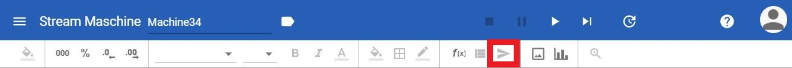
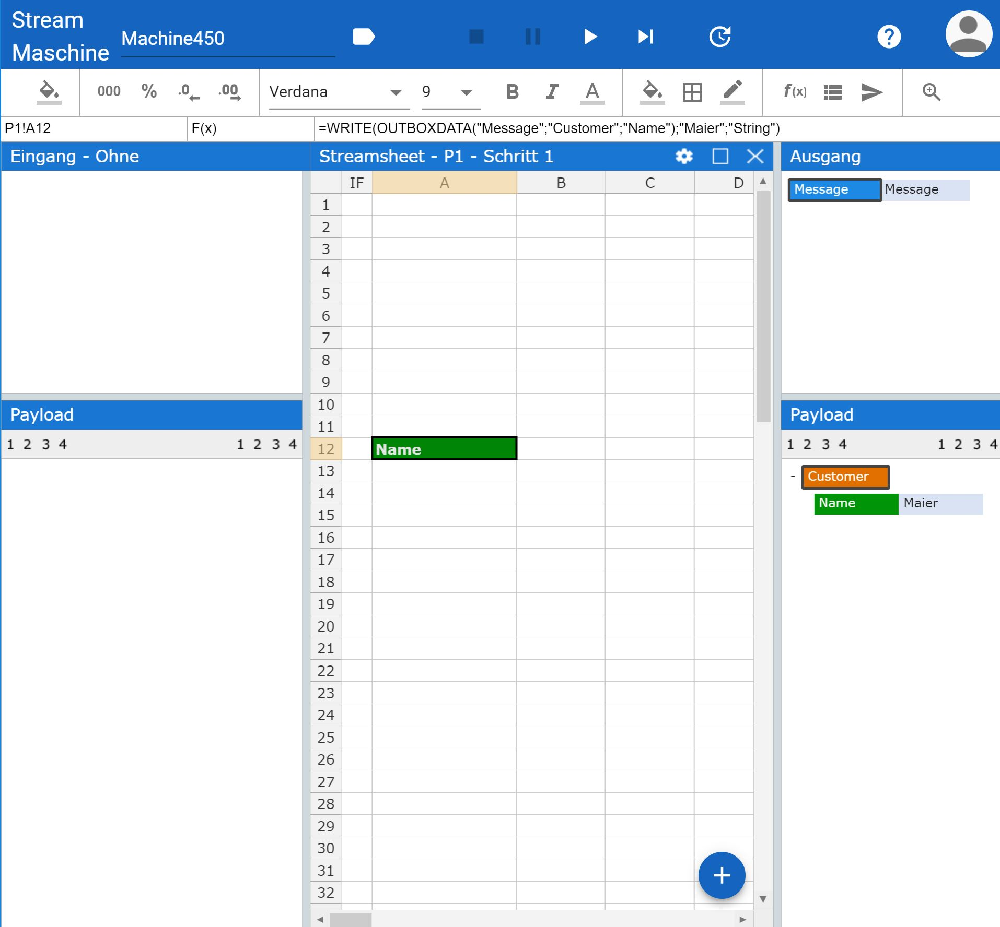
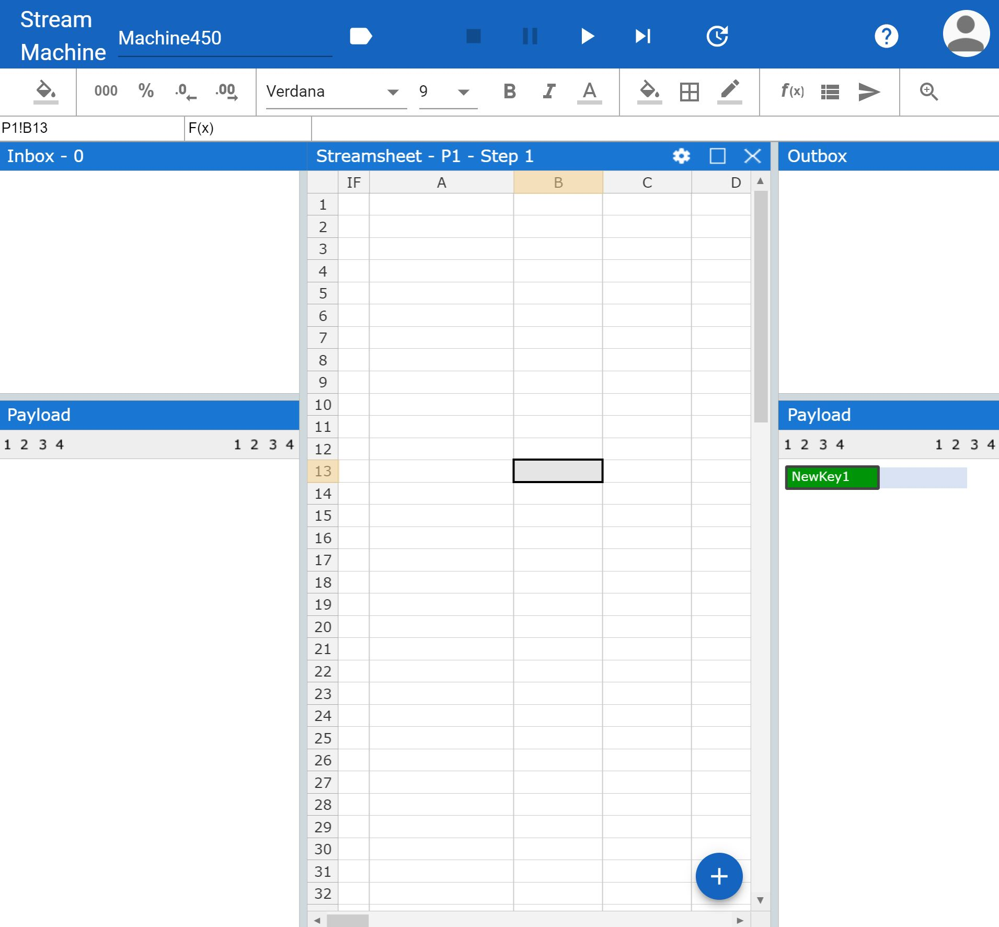
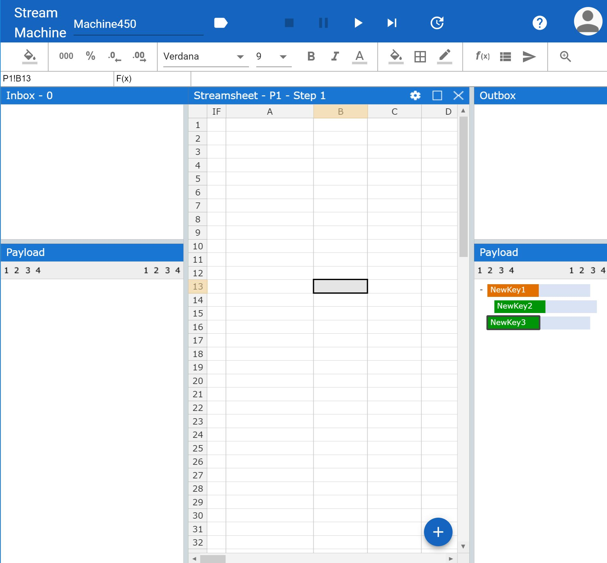
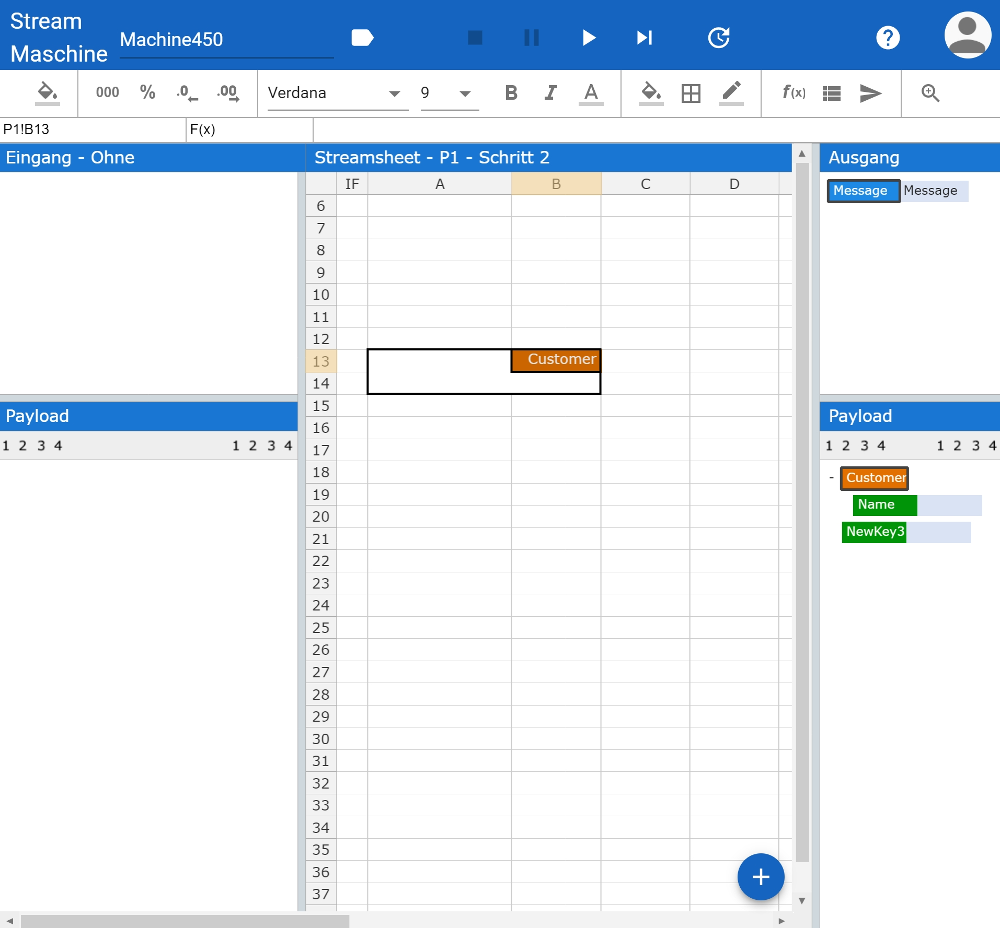
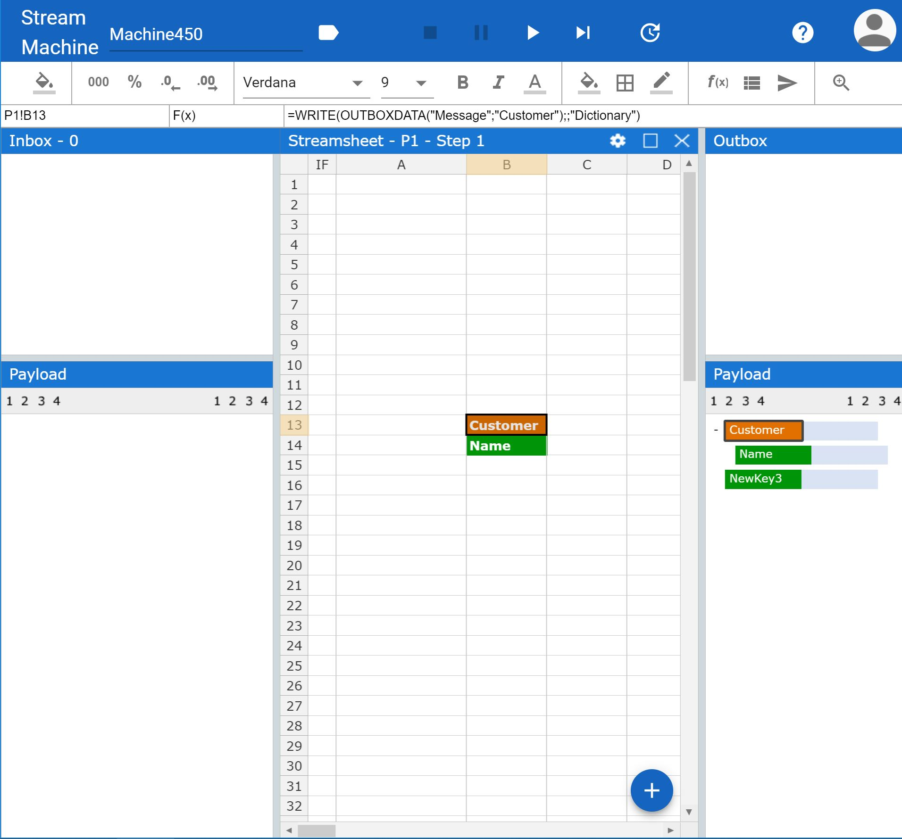

Messages¶
To actually configure a message flow it is essential to understand how to recieve and send data using the grid. In this tutorial I will show you how to use messages from your Inbox as actual input in the grid and how to sent messages to any device you need. First of all lets begin with reading a message.
Reading¶
Reading the Inbox is very simple. Just click on the object of your payload you want to work with and drag & drop it onto a cell of your choice. This creates a READ() function on the grid. Depending on which object of your payload you dragged all objects included will be dragged to the grid as well. There are two ways to represent the payload horizontal and vertical. To change the direction press ctrl while dragging. As an alternative you are always welcome to type the READ() function by yourself. This will have the same effect.


In a running machine the resulting READ() function will update itself with every incoming message, given that it consists out of the same payload structure. If a value is not updated by a new message, the value either stays as it was or turns into “#NA”. This can be configured within the READ() function parameter.
Publishing¶
To forward your data it is neccessary to create a pubishing function. For each API there is a different function with different parameters. All of these are gathered in our Function Wizard. The wizard provides a simple form to insert the required information, so your data arrives at the right adress.
You find the Wizard by selecting a cell and clicking on the marked icon.

PUBLISHMQTT¶
PUBLISHMQTT publishes a message via MQTT.
Streams: You need to select the Producer with the desired settings. They set the connection and Base Topic for your message.
Message: Define your Message using a JSON, number or a string value.
Topic: Define the Topic you want to publish your data to. It will always extend the path given by the Connector or Producer of your choice.
Quality of Service: Decide how the message will be send using an integer between 0 and 2: “At most once” 0, “At least once” 1 and “Exactly once” 2.
{kind=link}
KAFKAPUBLISH¶
Streams: You need to select the Producer with the desired settings. They set the connection and Base Topic for your message.
Message: Define your Message using a JSON, number or a string value.
Topic: Define the Topic you want to publish your data to. It will always extend the path given by the Connector or Producer of your choice.
Quality of Service: Decide how the message will be send using an integer between 0 and 2: “At most once” 0, “At least once” 1 and “Exactly once” 2.
RESTREQUEST¶
RESTRESPOND¶
SENDMAIL¶
WRITEFILE¶
MONGO¶
Writing¶
Another way to define a message is in the Outbox. Instead of publishing data directly via a function, the Outbox can be used to collect data and define Messages. These Messages can be customized in their JSON structure to fit the target adress.
To create a new message either use the WRITE() function and declare all objects directly or choose to predefine the structure and keys in the payload.
WRITE():
To use the WRITE() function it is neccessary to understand each indivdual Paramter. The WRITE() function is composed out of the following:
=WRITE(Key, Value, Type)
Arguments
| Name | Description |
|---|---|
| Key | A key to a data item, that should be written. The key is usually created by using the OUTBOXDATA utility function. The key consists of the path to the item within the JSON object. |
| Value | Value to assign to key. |
| Type | Type of Value. Allowed types are String, Number, Boolean, Array, Dictionary. The type defines the color of the cell. |
As an example we could write down a customer with the last name “Maier” in the Outbox. This requires the following paramter:
=WRITE(OUTBOXDATA(“Message”, “Customer”, “Name”), “Maier”, “String”)
The Key describes, where in the hirachy of our object we want to place the value. In this case we navigate from the Message name “Message” to the key element “Customer” further to the key element “Name”. Our value is the actual name “Maier”. Finally we have to decalre what kind of value type “Maier” is. In our case it is a “String”.
And this is what it would look like:

In A12 you can see the WRITE() function in the grid, on the right side the created Outbox Message and Payload and on the top theWRITE() function is represented.
Sidenote: This state represents the UI after one calculation cycle. The Outbox Message is only created, if the function is calculated once ore more.
Payload:
To predefine the structure double click in the Outbox payload and a new object will appear. Double click again to create another.

To change the hirachy of an object select it and press TAB to move it to the right or SHIFT + TAB to move it to the left.

Rename the Keys by double clicking the object. To use your predefined structure in the grid simply drag & drop it.

Similar to the payload of the Inbox drag & drop creates a WRITE() function in the grid.

The resulting message values will change from Tick to Tick, if the values in the WRITE() function are updated.
Now the Message is ready to get published. Again select a cell and open the Function Wizward to publish the Message in the Outbox. Use the function OUTBOX() or OUTBOXDATA() to either publish the whole or only part of the Outbox message.